Learning
Prior to this module I had experienced working with HTML and CSS. With that said, I'd quickly realised that I still had much to learn, as I discovered new tags and elements within both of the languages during the first half of the semester. I was fully aware of the fundamentals of both the languages, but my interest started to peak once the more complicated selectors and animations were introduced during the lectures. I have a tendency to do my own research on areas which catch my eye, so week by week I have been discovering different ways to implement different kids of features into this portfolio.
I have made great leaps in learning how to apply my knowledge, but my biggest downfalls stem from not researching into alternative designs before I start coding. While designing the main page, I first implemented a 'grid' based design to the main section of the page, which ended up being so complicated that i eventually lost sight of my original design. I revamped my design, scrapping 12 hours of coding and research in one go. However, in return I had arrived at a more comfortable looking main page and some much better looking code. This was the biggest learning experience during this project.
Experience
I have thoroughly enjoyed the first half of this module; I think that it has been the most enjoyable module out of them all so far. Our tutor had delivered excellent lectures and demonstrations; the lab sessions were very engaging and made me feel excited for the ones to follow.
I can honestly say that this assignment has been one of few which I've actually enjoyed. I always wanted to try and make a portfolio of my own on the web, but I'd never gotten around to making one, this time I had no excuse. My plan is to remaster these web pages throughout my career and use this as a display of my skill during interviews etc.
Report
Throughout the first two or three weeks of the semester I had decided to create isolated parts of the website, to later put them together into one coherent portfolio. This didn't exactly go to plan as I had changed my mind on what the final product will look like many times. I really struggle to make up my mind when it comes to designs, so I even created some wireframes to guide me. I later changed these layouts as they didnt look good once I unlocked more advanced techniques within CSS.
Index page
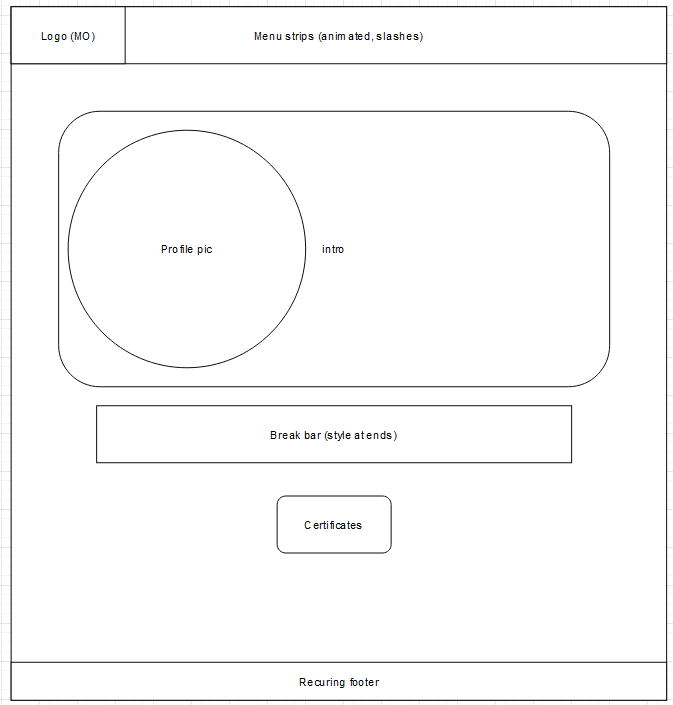The main page was designed with a centered approach, which showcases all of the information in the middle of the page. The logo, navigation strip and footer have been styled as simply as possible to maintain a clean and professional approach. The last thing I wanted, was to make this portfolio a mess to look at.
Portfolio page
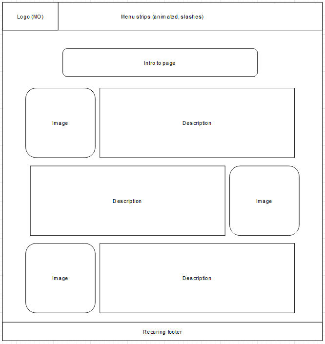The portfolio page was initially going to feature the design above, however once it was created and 'live', I really didnt like the look of it and so I changed the layout to be what it is now.
Contact page
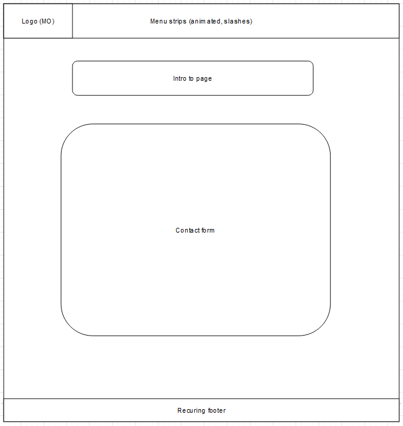The contact page started from a simple layout as I didnt really have many plans on what to put into it. I had added most of the functionality after it was covered in the lectures.
Work experience page
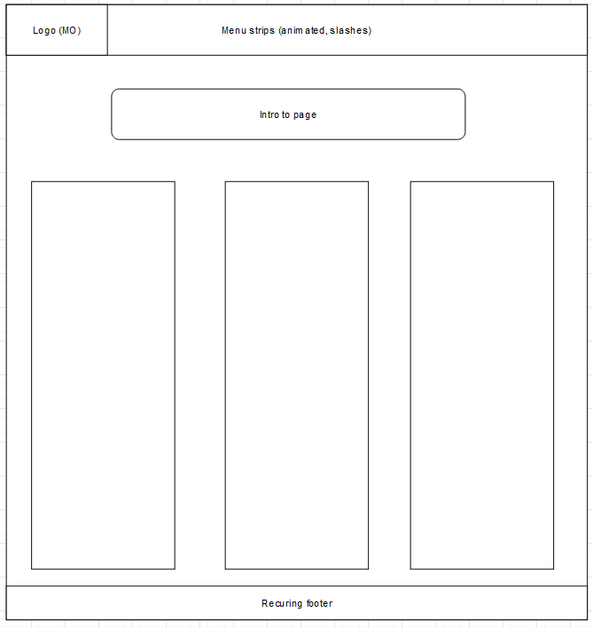The worke experence page pretty much turned out just as I had planned it, with 3 columns showcasing previous work experience.
Validation
Here are screenshots of the validation reports for each of my HTML pages. I have validated the CSS files also.
Index.html
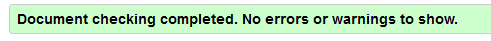Portfolio.html
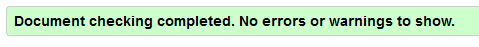Contact.html
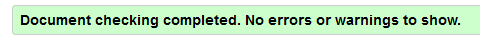WorkExperience.html
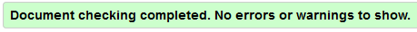SiteReport.html
Main.css
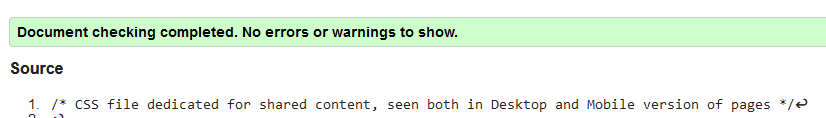Desktop.css
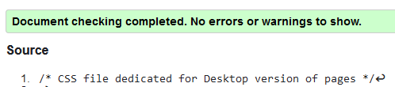Mobile.css
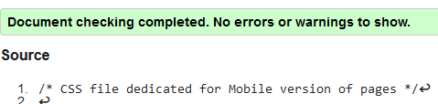References
I'd previously outlined that I have past experience with both CSS and HTML, however I have also researched more complex functions and have found them on these websites:
Colourful borders : Chris Coyier on Dec 28 and Coyier, C. (2022) Gradient borders in CSS: CSS-tricks, CSS. Available at: https://css-tricks.com/gradient-borders-in-css/ (Accessed: March 26, 2023).placeholder selectbox : Stack Overflow. (n.d.). html - How do I make a placeholder for a ‘select’ box? [online] Available at: https://stackoverflow.com/questions/5805059/how-do-i-make-a-placeholder-for-a-select-box.
Placeholder images : https://placehold.co/
Green social media icons : https://www.iconfinder.com/search/icons?family=accent-duo-tone-icons&license=gte__2&q=online